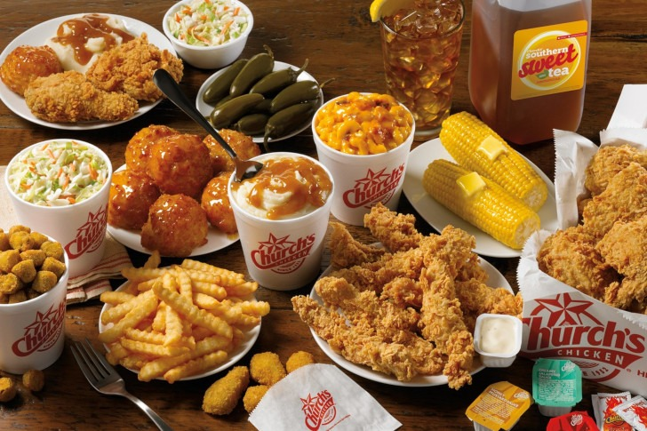
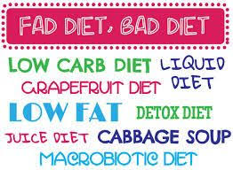

We live in an age of fast; fast fashion, fast technology, and fast food. The typical American diet consists of numerous unpleasantries healthwise, such as preservatives, pesticides and gmos. Almost, if not all, fast food contains atleast one of these ingredients. Most of the time they contain them all. As for the person who tries to avoid fast foods for health reasons, they find that simply avoiding fast food does not always work. The dietary landscape is tricky and filled with half truths and numerous fads. Who can be trusted when every diet claims to be backed by numerous doctors and fitness experts? What is really the healthiest diet?
The average person probably knows about the dangers of fast food, but most likely not the extent.
Nowadays, the diet industry has become a huge business preying on the uninformed. There are so many different types of diets out there that it can be overwhelming to find and stick to a specific one.
A good diet can come in many different forms. Although I just mentioned that the plethora of diets available can be overwhelming, a good diet is not limited to only one type. So what does make a good diet? Basically, a good diet consists of whole and high quality foods along with mostly vegetables. This link to a Harvard research article details the importance of quality over any specific type of diet: The Best Diet:Quality Counts
Basically, you can use many different diets, as long as an emphasis is placed on the quality of the foods and plants are consumed in high amounts.
| Diet | Description |
|---|---|
| Basically Vegetarian without consuming any animal products | |
| Eating food available to cavemen of old | |
| Foods consistent with the Mediterranean geographical location |